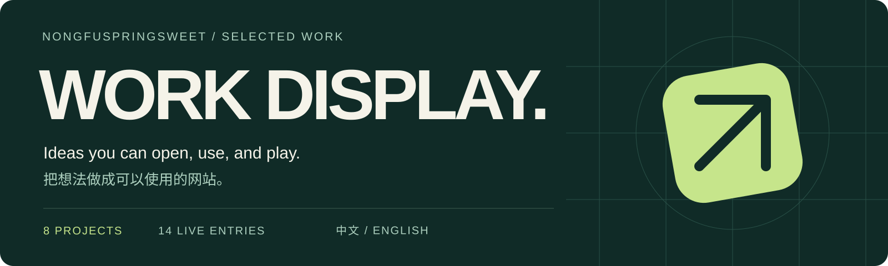
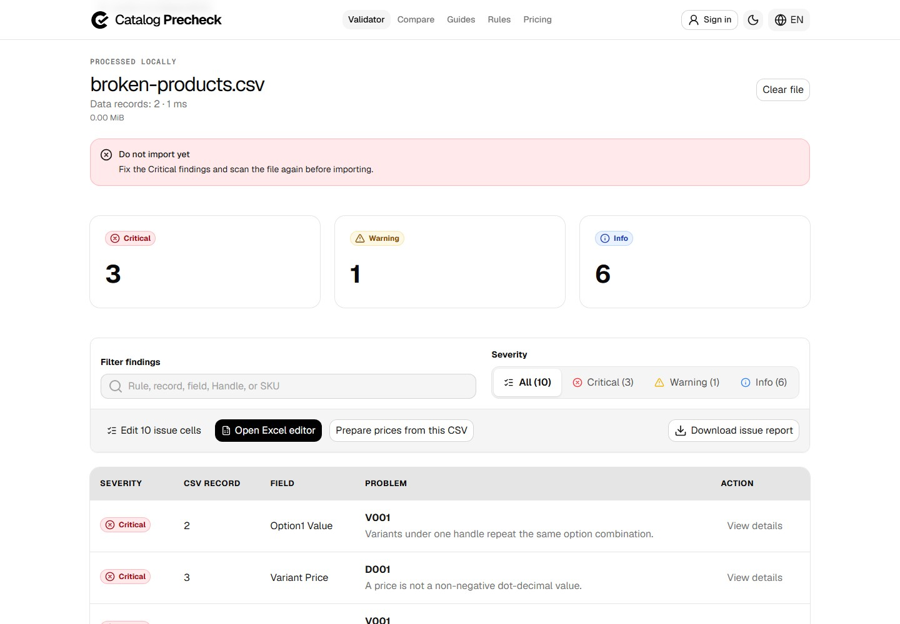
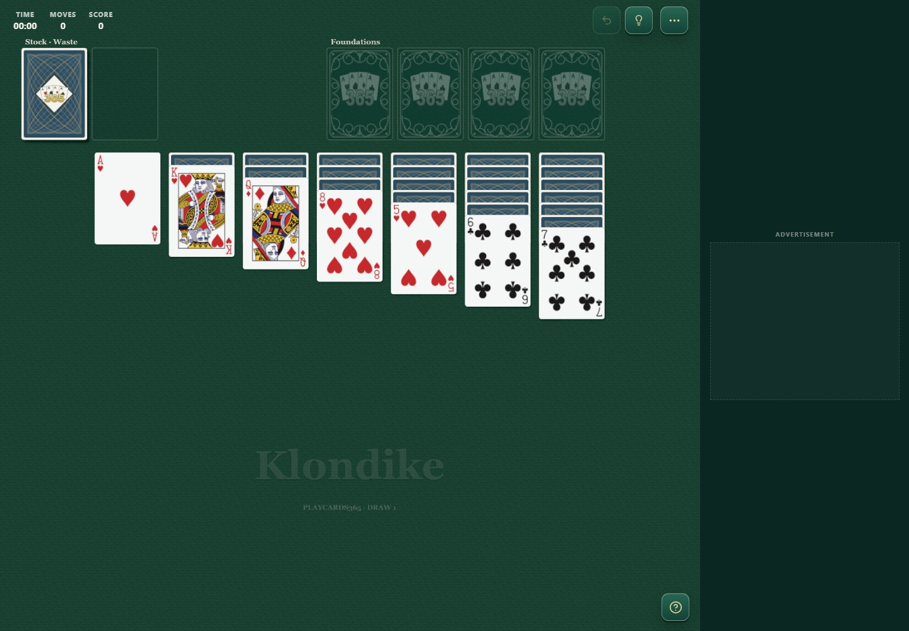

Work Display · Selected Work
Hi, I'm NongfuSpringSweet. This is a collection of my live projects: practical utilities, creative workspaces, a teaching app, and browser games.
8 projects, 13 live entries. Click a screenshot to try a project. Descriptions and screenshots were checked on 2026-10-15, including all 5 VZTool subdomains shown below.
Explore the projects
| Project | What it does | Try it |
|---|---|---|
| 2048 Beer | A beer-themed take on the 2048 puzzle | 2048.beer |
| BingoMint | Create, design, and print bingo cards | bingomint.com |
| Catalog Precheck | Preflight product files and compare import risks | catalogprecheck.com |
| Mahjong Study | Build mahjong lessons, tile examples, and exercises | mahjongstudy.com |
| Offline Game Hub | Small games that work offline after caching | offlinegamehub.com |
| OneImageTool | Image, SVG, PDF, and everyday utilities | oneimagetool.com |
| PlayCards365 | Solitaire and classic card games | playcards365.com |
| VZTool | ASCII, icons, pixel art, grid splitting, and cutouts | vztool.com |
2048 Beer
A familiar merging puzzle with a beer-inspired visual identity.
Use arrow keys or swipe to combine matching tiles, progressing from Fresh Pour to Legendary Brew. Wooden textures, illustrated glasses, and increasingly dark tile colors give each upgrade a distinct look.
- Three modes: Standard, Classic, and Plus.
- Standard includes Undo, Swap, and Clear one; Classic keeps the puzzle free of power-ups.
- Play with a keyboard or touch controls, directly in your browser.
BingoMint
Turn an activity idea into a stack of printable bingo cards.
A card-making workspace for classrooms, parties, and group activities. Add words, pictures, and emoji; adjust the design; preview the result; then generate different arrangements and print-ready PDFs.
- Custom 3×3, 4×4, and 5×5 cards, plus classic 30-, 75-, 80-, and 90-ball formats.
- Theme templates, free spaces, card styling, and A4 or Letter layouts.
- Six-ticket 90-ball strips, local saving and JSON backups, plus a local caller and card check.
- Basic creation and downloads need no account, with a multilingual interface.
Open the editor · Browse templates
Catalog Precheck
Understand product-file problems before importing into a store.
A browser-based workspace for bulk catalog tasks. Check Shopify CSV/XLSX structure, headers, products, variants, prices, and image URLs, with findings tied to specific records and fields.
- Shopify preflight checks, two-file Import Risk Compare, price-adjustment previews, and reports.
- WooCommerce-to-Shopify conversion and entry points for BigCommerce, Wix, and specific TikTok Shop templates.
- File checks run in your browser. Review the findings before choosing whether to download a modified copy.
Checks cover the supplied files and supported rules. They cannot inspect the live store or guarantee an import outcome.
Visit the site · Shopify validator · Compare files
See actual findings from the public practice file
An actual check using the site's built-in public practice file.

Mahjong Study
Turn a tile example into a lesson you can explain, present, and share.
A teaching workspace for mahjong instructors and learners. Arrange tiles, write questions and explanations, organize teaching cards, and build step-by-step presentations around the decisions you want to discuss.
- Editable lessons, choice questions, student previews, and presentation mode.
- Hand and table editors, a 3D tile viewer, and image or print exports.
- Rule references and practice entry points, with distinct mahjong traditions clearly labeled.
- Basic editing works without an account, with local saving and JSON backups.
Offline Game Hub
Small games for spare moments, including the ones without Wi-Fi.
A browser collection of 13 puzzle, board, and arcade games. Find Minesweeper, 2048, Sudoku, Snake, Four in a Row, Falling Blocks, a 3D magic cube, and more in one place.
- Categories, search, and favorites to help you choose a game.
- Selected games support computer opponents or two players on one device.
- Works offline after the initial online cache finishes, with scores kept locally. Offline access depends on the browser retaining its cache.
OneImageTool
Everyday image tasks, ready in your browser.
A shared workspace for image, SVG, PDF, and utility tools. Compress, convert, crop, or resize an image, then move on to smaller tasks such as making a QR code or a website icon.
- Image compression, format conversion, cropping, watermarks, and more.
- SVG conversion and optimization, plus PDF merging and compression.
- Search, favorites, and multiple interface languages across desktop and mobile.
- File processing runs in the browser; common workflows need no account.
PlayCards365
A familiar card table, ready whenever you have time for a game.
A collection of 28 card games, from Klondike, Spider, and FreeCell to bot practice in Hearts, Dou Dizhu, and Texas Hold'em. Green tables, readable cards, and layouts for different screens bring a complete card-game experience to the browser.
- Start as a guest, with no installation required.
- Learning resources, local records, and automatic saving.
- Hearts and Dou Dizhu have online-room Betas; available modes are listed on each game's page.
Explore the games · Play Klondike
Open a real Klondike table

VZTool
Small tools, made useful.
A family of tools for image creation and everyday design. The main site helps you discover tools, while 5 dedicated subdomains each offer a focused workspace. Image processing stays in your browser.
| Tool | What it does | Dedicated site |
|---|---|---|
| Image to ASCII | Turn pictures into character art | ascii.vztool.com |
| Icon Workshop | Create website icons and complete icon packs | icon.vztool.com |
| Pixel Studio | Turn photos into pixel art and craft patterns | pixel.vztool.com |
| GridSplit | Split social-media grids and preview posting order | split.vztool.com |
| Cutout | Remove backgrounds with AI and refine by hand | cutout.vztool.com |
Image to ASCII
Convert photos into character art, adjusting characters, colors, and detail while previewing the result. Export text, PNG, SVG, HTML, or ANSI for avatars, posters, and terminal-inspired artwork.
Icon Workshop
Turn one image into website favicons and app icons. Preview different sizes and shapes, then download ICO, PNG, or an icon pack with a manifest and installation code for your project.
Pixel Studio
Convert photos into pixel art, controlling the look through grid density, color count, and preset palettes. Export the artwork or create numbered patterns for a craft project.
GridSplit
Split a larger image into a social-media grid. Preview the full composition in a profile layout, review tile numbers and posting order, and download the pieces as a package.
Cutout
Remove backgrounds with AI, then refine edges with a lasso, magic wand, or brush. Switch between subject and background, soften edges, replace the background, and undo edits before exporting transparent PNG, JPG, or a mask.
Images stay on your device. AI mode downloads its model on first use, and availability depends on your browser and hardware.
Screenshots show public production pages using default content or public examples. Screenshot sources and capture notes record URLs, dates, and states. Projects continue to evolve; visit each site for its current experience.